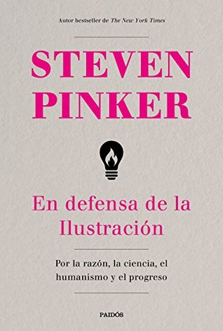

En defensa de la Ilustración: Por la razón, la ciencia, el humanismo y el progreso
Reseña por Jorge I. Zuluaga

Ver reseña en GoodReads (necesita cuenta)
Esta frase, que cierra el libro, resume la casi «tautológica» tesis de su autor, el científico cognitivo Steven Pinker, de que, contra lo que intelectuales de todo tipo, medios de comunicación y políticos parecen repetirnos con insistencia, las sociedades humanas están progresando y lo hacen (según la sugerencia del autor) gracias a abrazar los pilares de la Ilustración: razón, ciencia y humanismo.
Siendo un científico, que además comparte plenamente (aunque sé que no todos los científicos lo hacen necesariamente) los principios del racionalismo y el humanismo, no puedo sentirme más que identificado con la mayoría de los argumentos que presenta Pinker en su extensa y ampliamente documentada exposición de motivos. Yo sé que identificarse no es lo mismo que suponer a ultranza que son enteramente válidos. Pero siendo las emociones una parte importante del disfrute intelectual, reconozco, sin vergüenza, que este libro me ha excitado considerablemente.
Bill Gates, de cuya inteligencia y logros personales difícilmente se podría dudar, lo ha llamado el mejor libro que ha leído en su vida. Pero él también forma parte de una élite económica para la cual, posiblemente, muchas de las tesis (muy discutidas y criticadas por académicos) sobre el capitalismo, la desigualdad y el progreso económico son bastante convenientes.
Lo más significativo del texto, y en eso creo que coincidirán también los críticos de Pinker, es su voluminosa lista de referencias. En la edición que he leído (Paidós, segunda edición), las notas y referencias ocupan 145 páginas (un pequeño libro) de las casi 700 que tiene el volumen. Si bien se podría decir que cualquiera puede elegir las referencias que más le convienen a sus tesis, no puede decirse que muchas de las conclusiones de Pinker no estén respaldadas también por innumerables estudios de académicos independientes de todos los tiempos, especialmente del siglo XX.
Comparto plenamente la tesis central de Pinker, y ahora me apoyo en mucha de la evidencia que compila en su libro: la Ilustración ha funcionado. El mundo en el que vivimos es mucho mejor que el mundo del pasado y nada hace pensar que el del futuro no será mejor también.
Me encantaría saber que este libro está siendo leído, analizado cuidadosamente y criticado sin piedad en las universidades, incluso en la educación básica. Sea que tenga razón o no en todo, es cierto que, como demuestran estudios psicológicos citados por él, los humanos estamos más dispuestos a aceptar nuestros problemas y, sobre todo, a proponer soluciones, si se despolitizan los temas y si se los presenta como lo que son: problemas, y no como una prueba de que el mundo está a punto de acabar.
Si no pueden leerlo todo (es realmente voluminoso y yo tuve que hacer acopio de tiempo de mi sabático para leerlo con paciencia), les recomiendo estos capítulos que considero contienen algunos de los más impresionantes datos y tratan los asuntos más espinosos (pero excitantes) de la obra de Pinker:
- Capítulo 3. Contrailustraciones.
- Capítulo 9. Desigualdad (que contiene las tesis más controversiales en temas de economía política).
- Capítulo 10. Medio ambiente (una aproximación diferente a los difíciles retos ambientales que enfrentamos).
- Capítulo 19. Amenazas existenciales.
- Capítulo 21. La razón (un capítulo que me obligó a mí mismo a revisar la manera como había pensado y criticado las ideas de otros, al punto de avergonzarme; ¡muy recomendado!).
He preparado un hilo en Twitter sobre algunos gráficos y referencias interesantes, que los más aficionados a las redes sociales pueden encontrar «útil». Este es el enlace: bit.ly/hilo-pinker-defensa-ilustracion.
También encontrarán muy útil leer esta ácida crítica publicada por la revista «Current Affairs», llena de referencias a otras críticas muy válidas e igualmente ácidas sobre la obra de Pinker (sugiero que no la lean hasta terminar el libro, al menos para no sesgarse o para ver si identifican los mismos problemas que otros intelectuales han identificado en él): https://www.currentaffairs.org/2019/0...
Con todo, creo que «En defensa de la Ilustración» será un libro que hará historia (para bien o para mal) y, si eres intelectualmente curioso, no deberías dejar que pase mucho tiempo sin leerlo.